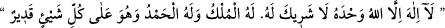

günlerden birisinin gecesini ibadetle geçirmek ise bir sene boyunca hac ve umre
yapmak gibidir. Bu ilk on günü oruçlu geçirmek son derece kuvvetli bir müstehabdır.
Özellikle Arafat’ta vakfeye durulan dokuzuncu günde hac yapmakta olanların oruçsuz
olmaları, yapmaları gereken şer’î ibadetleri gevşeklik olmadan huzur içinde ve kemâl
üzere yerine getirebilmeleri için müstehabdır. Nitekim Peygamberimiz (s.a.) bir hadis-i
şeriflerinde şöyle buyurmuşlardır: “Duaların en hayırlısı, arefe günü (Zilhicce’nin
dokuzuncu günü) yapılan duadır. Benim ve diğer peygamberlerin söylediklerinin en
hayırlısı da şu sözdür:
O birdir, tektir, ortağı yoktur, mülk O’nundur ve hamd O’na aiddir. O her şeye
hakkıyla gücü yetendir.”[52]
Âyetteki “kurban” da Allah tarafından insanlar için belini doğrultma vesilesi
kılınmıştır.” “
” Kâbe’ye hediye edilip orada boğazlanan eti fakir fukaraya
dağıtılan kurbanlık anlamındadır. Bu kurban, kesen için bir ibadet, fakirler için de bir
maîşet vesilesi olduğu için hem dînî hem de dünyevî işleri yoluna koymuş olmaktadır.
Fakir de şöyle derim: Buradan anlaşılıyor ki kurbanın gayesi, fakirlerin ihtiyaçlarını
gidermektir. Böyle olunca da kurban kesen kişinin kurbanın çoğunu, hatta tamamını
tasadduk etmesi müstehab olur.
Herkes kendi yüce himmetiyle
Malı değerinde fayda elde eder.
Hacıların kurban bayramı günü yapacakları hac ibadetleri vardır: Hacılar Mina’dan
Mescid-i Harâm’a giderler, diğer müslümanlar onlara benzemek için musallaya
çıkarlar. Hacılar tavaf yaparlar, diğer müslümanlar buna mukabil bayram namazı
kılarlar. Çünkü Peygamberimiz (s.a.) “Kâbe’yi tavaf namaz gibidir.”[53] buyurmuştur.
Hacılar saçlarını tıraş etmek ve tırnaklarını kesmek gibi sünnetleri ifâ ederler, diğer
müslümanların buna mukabil bid’atın kökünü kazıyıp Hz. Peygamber (s.a.)’in sünnetini
yerleştirmeleri gerekir. Hem hacılar, hem de diğerleri kurban keserler. Fakat her mal
Rabb’in hazinesine, her kalb Rabb’i tanımaya (ma’rifete), her nefis de Rabb’e hizmete
elverişli değildir.
Bu konuda Mesnevî’de şöyle denir:
Nerde sende Halil’cesine Allah’a dayanma ki
Kılıcın İsmail’i kesmesin?
Nerde sende Kelîm’deki keramet ki
Nil’in dibini ana cadde yapasın?